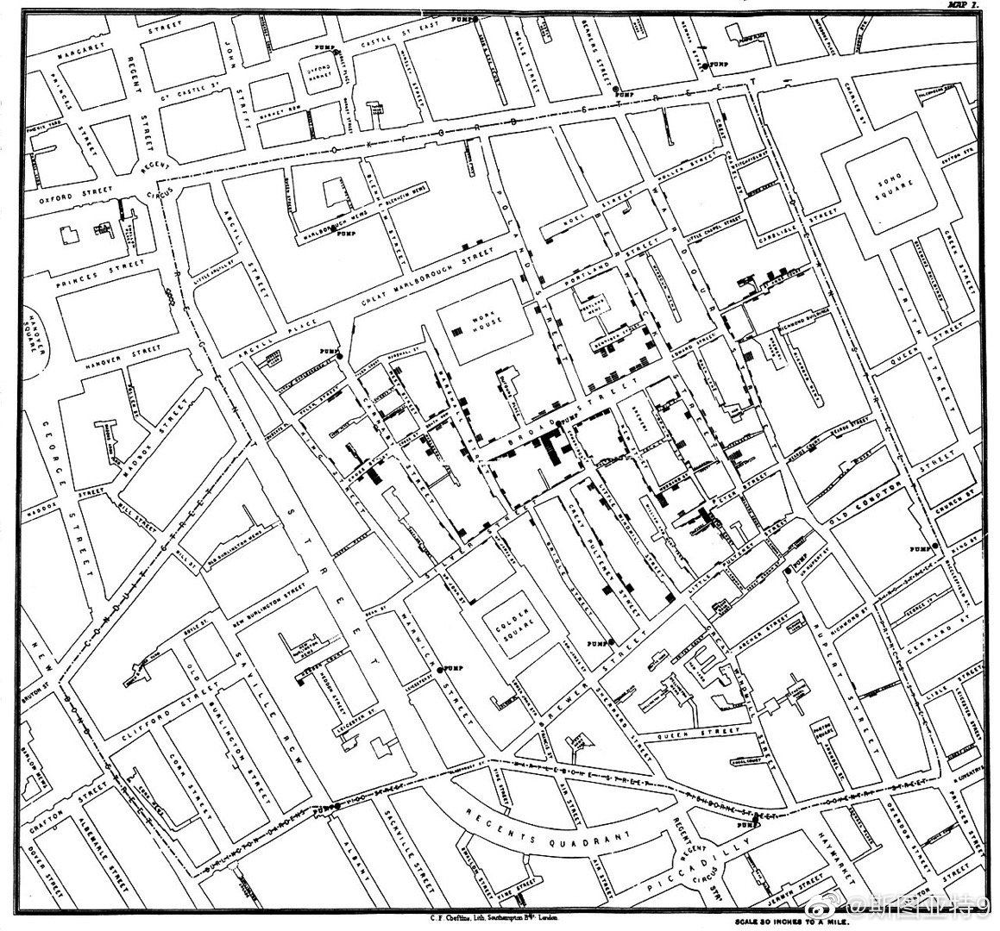

在看《The Atlas of Disease》一书。看到霍乱一章。150年前，人们对霍乱如何传播非常迷惑。有一个叫John Snow的人，先是在一次霍乱爆发的时候挨家挨户敲门问每家用哪个水公司的水，发现喝一个水公司的家庭得病比另一个公司高7倍。在之后的又一次爆发中，他挨家挨户敲门问有没有病人，画出了下面这张图，显示出多数病人都在某一水井附近。居民去别的水井用水就大大减少了感染机会。看了这些传染病研究的历史，就感觉我们今天对一个新的传染病的认识过程和一百五十年前没有本质区别，只是传染和研究的节奏都更快而已。公开更多更完善的信息是找出解决办法的关键。信息封闭就是作茧自缚。
- 